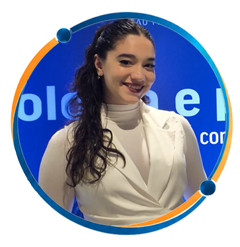
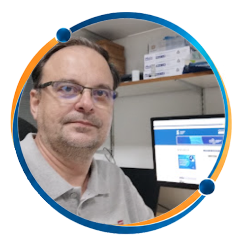
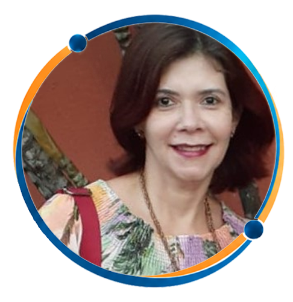

Abertura
Abertura do I ENSEFIM 2026

Coordenadora da mesaConvidados

Coordenador do Departamento de Física - UFSCoordenador da residência em Física Médica - UFS

Coordenadora da graduação de Física Médica - UFS